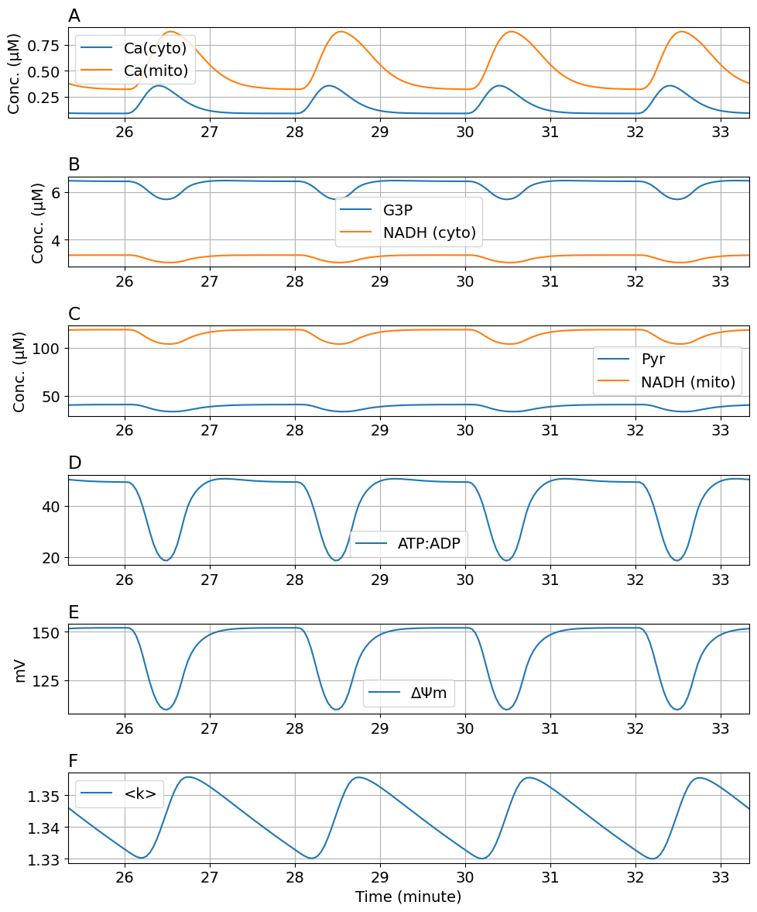

Figure 5
Figure 5#
using DifferentialEquations
using ModelingToolkit
using MitochondrialDynamics
using MitochondrialDynamics: GlcConst, degavg, ΔΨm, Ca_c, Ca_m, t, G3P
using MitochondrialDynamics: Pyr, NADH_c, NADH_m, ATP_c, ADP_c, degavg
using MitochondrialDynamics.Utils: second, μM, mV, mM, Hz, minute
import PyPlot as plt
rcParams = plt.PyDict(plt.matplotlib."rcParams")
rcParams["font.size"] = 14
# rcParams["font.sans-serif"] = "Arial"
# rcParams["font.family"] = "sans-serif"
┌ Info: Precompiling MitochondrialDynamics [1a231dcf-63c2-466e-8f46-4027ba595b90]
└ @ Base loading.jl:1662
14
tend = 2000.0
@named sys = make_model(; glcrhs=10mM)
sssol = solve(SteadyStateProblem(sys, []), DynamicSS(Rodas5(), tspan=tend))
caavg = sssol[Ca_c]
0.00026801443352651635
function cac_wave(t)
ca_r = 0.09μM
period = 2minute
ka_ca = (caavg - ca_r) * 1.5
x = 5 * ((t / period) % 1.0)
return ca_r + ka_ca * (x * exp(1 - x))^4
end
@register_symbolic cac_wave(t)
@named sysosci = make_model(; cacrhs=cac_wave(t), glcrhs=10mM)
prob = ODEProblem(sysosci, sssol.u, tend)
sol = solve(prob)
retcode: Success
Interpolation: specialized 4th order "free" interpolation, specialized 2nd order "free" stiffness-aware interpolation
t: 1585-element Vector{Float64}:
0.0
0.0006883351812923447
0.0009914665346983061
0.0012915136659450177
0.0016167151189920397
0.001966945059663325
0.0023338242028928054
0.0027048668394652683
0.0030712495242911112
0.0034304195341098203
0.0037841326546693933
0.0041355000147278
0.004487035940742874
⋮
1980.2575360038857
1981.5167394553546
1982.851542344532
1984.2752141222743
1985.804311629861
1987.4599903898252
1989.2699699691493
1991.2716419628207
1993.517193044593
1996.083348853109
1999.086722233861
2000.0
u: 1585-element Vector{Vector{Float64}}:
[0.10750877497620974, 0.003120150596859046, 0.0008438745128640356, 0.1249510810018473, 0.00600474144593352, 0.03519636435409779, 4.356898470231694, 0.004127073545763206, 0.22661077399440946, 0.040212957951005546]
[0.1075087824171056, 0.0031201501411461515, 0.000843838622158358, 0.12495287708553489, 0.006004741912782051, 0.035196363911793864, 4.356915773555995, 0.00409639210309375, 0.22661077399846682, 0.04021295784877427]
[0.10750879045565907, 0.0031201498688671323, 0.0008438228172318271, 0.12495367496546007, 0.006004742194756647, 0.035196363647961845, 4.356953090601327, 0.004112584810728616, 0.22661077398944307, 0.04021295779983789]
[0.10750880125117065, 0.003120149434065519, 0.0008438071735614236, 0.12495449010070876, 0.006004742643959565, 0.035196363226226705, 4.356979863744296, 0.004118471496169686, 0.22661077395426618, 0.04021295774189379]
[0.1075088161435188, 0.00312014880142914, 0.0008437902189155311, 0.12495539776907114, 0.0060047432975847935, 0.035196362612305826, 4.35700297396443, 0.004118966289403913, 0.2266107738905849, 0.040212957669836104]
[0.10750883589640295, 0.0031201479558281954, 0.0008437719599776571, 0.12495639937148072, 0.006004744172113882, 0.03519636179143006, 4.357026183526816, 0.004117841974345504, 0.22661077379596856, 0.040212957582803424]
[0.10750886071545694, 0.0031201468930036258, 0.0008437528337044746, 0.1249574743695309, 0.006004745272631442, 0.035196360759319145, 4.357049745082571, 0.004115936600828389, 0.22661077366873195, 0.04021295748144774]
[0.10750889010580132, 0.003120145636392063, 0.0008437334910637216, 0.12495858794849223, 0.006004746575486016, 0.03519635953858594, 4.3570731731784225, 0.004113633082771749, 0.22661077351110215, 0.04021295736845672]
[0.1075089233539601, 0.0031201442190090705, 0.0008437143920264949, 0.12495971308143997, 0.00600474804697375, 0.035196358161184035, 4.3570963512918865, 0.0041114263406735446, 0.22661077332724425, 0.040212957246668166]
[0.10750896001835246, 0.003120142661767065, 0.0008436956696318788, 0.12496084025135837, 0.006004749665808206, 0.03519635664734132, 4.357119506057677, 0.004109718367379044, 0.22661077312011937, 0.04021295711753915]
[0.10750900005790681, 0.0031201409666952746, 0.0008436772323235462, 0.12496197354600497, 0.006004751430221043, 0.03519635499894383, 4.35714274254652, 0.004108491403374809, 0.22661077289017942, 0.04021295698096882]
[0.107509043688162, 0.0031201391238269505, 0.0008436589179144176, 0.12496312222279934, 0.006004753350912132, 0.03519635320620798, 4.357165997919827, 0.004107466794908837, 0.2266107726361209, 0.04021295683601635]
[0.1075090911781002, 0.0031201371211941197, 0.0008436405953453381, 0.1249642943220748, 0.0060047554407255, 0.035196351257390415, 4.357189215216487, 0.004106413686647159, 0.22661077235624955, 0.04021295668168929]
⋮
[0.11642319080763516, 0.0033024919835796286, 0.000552639573207778, 0.14847350628562156, 0.0064510744925421765, 0.03884046723570784, 4.409544515746668, 0.001664534543995748, 0.2057719162847502, 0.027385979209972988]
[0.11670081753851655, 0.003308165438826339, 0.0005359982863464059, 0.14889019118925942, 0.006456920829834755, 0.039018309922783836, 4.409959511758023, 0.001649421100449658, 0.20562749524774657, 0.02735106851868034]
[0.11696513752189767, 0.0033135418896650653, 0.0005191686413167777, 0.14927921030338157, 0.006461912186499356, 0.039192680990638475, 4.410308999734214, 0.0016367459086166329, 0.205471143809025, 0.02731319525458723]
[0.11721596595074144, 0.0033186147433430504, 0.000502183249160407, 0.1496414132490124, 0.006466019701115185, 0.03936367498126123, 4.4105924256095195, 0.0016265019178686039, 0.2053012774381326, 0.027271971569021305]
[0.11745300782175129, 0.0033233744473536984, 0.00048508110306995123, 0.1499774085805352, 0.006469207107715872, 0.03953135755829904, 4.410808496296046, 0.0016187135484818135, 0.20511588565130548, 0.027226904351630086]
[0.11767586511040751, 0.0033278085902671544, 0.00046790866019781103, 0.15028758550005142, 0.006471432169753247, 0.03969576812144646, 4.41095527736641, 0.0016134331155479712, 0.20491237297807383, 0.02717735598397964]
[0.11788403810274539, 0.003331901912161819, 0.00045072174619467225, 0.1505721207723278, 0.006472648599912209, 0.0398569157648543, 4.411030309551544, 0.0016107368999359415, 0.20468731989697417, 0.027122485264796457]
[0.11807692572101583, 0.003335636344364927, 0.00043358836549669584, 0.15083097810359794, 0.00647280900439736, 0.04001476826464399, 4.4110307846929775, 0.001610719370113478, 0.2044361053485941, 0.027061154043274967]
[0.11825382345795228, 0.0033389911215629957, 0.0004165931907622091, 0.15106389756290517, 0.006471869579491374, 0.04016922653182498, 4.41095383593109, 0.00161348352142158, 0.20415228701818372, 0.026991773788805372]
[0.11841396509654872, 0.003341943933010228, 0.00039983998621001993, 0.1512704351480606, 0.006469797185844927, 0.04032011611902095, 4.410796991280923, 0.0016191254199608544, 0.2038264240365341, 0.02691201411296601]
[0.11855639924399486, 0.0033444694549619246, 0.00038347507453151533, 0.15144977836038317, 0.006466583091488985, 0.04046698292484105, 4.4105591269700115, 0.00162770052714253, 0.20344425565046123, 0.026818350182455195]
[0.11859070840673401, 0.003345072710905129, 0.00037914067091707616, 0.151491005329167, 0.00646543235374022, 0.04050607745149714, 4.410473595881565, 0.001630792521475294, 0.20332805002404747, 0.02678984545587113]
function plot_fig5(
sol;
tspan=(1520.0, 2000.0),
npoints=200,
figsize=(10, 12)
)
ts = LinRange(tspan[1], tspan[2], npoints)
tsm = ts ./ 60
ca_c = sol(ts, idxs=Ca_c) .* 1000
ca_m = sol(ts, idxs=Ca_m) .* 1000
g3p = sol(ts, idxs=G3P) .* 1000
pyr = sol(ts, idxs=Pyr) .* 1000
nadh_c = sol(ts, idxs=NADH_c) .* 1000
nadh_m = sol(ts, idxs=NADH_m) .* 1000
atp_c = sol(ts, idxs=ATP_c) .* 1000
adp_c = sol(ts, idxs=ADP_c) .* 1000
td = atp_c.u ./ adp_c
dpsi = sol(ts, idxs=ΔΨm) .* 1000
k = sol(ts, idxs=degavg)
fig, ax = plt.subplots(6, 1; figsize)
ax[1].plot(tsm, ca_c, label="Ca(cyto)")
ax[1].plot(tsm, ca_m, label="Ca(mito)")
ax[1].set_title("A", loc="left")
ax[1].set(ylabel="Conc. (μM)")
ax[2].plot(tsm, g3p, label="G3P")
ax[2].plot(tsm, nadh_c, label="NADH (cyto)")
ax[2].set_title("B", loc="left")
ax[2].set(ylabel="Conc. (μM)")
ax[3].plot(tsm, pyr, label="Pyr")
ax[3].plot(tsm, nadh_m, label="NADH (mito)")
ax[3].set_title("C", loc="left")
ax[3].set(ylabel="Conc. (μM)")
ax[4].plot(tsm, td, label="ATP:ADP")
ax[4].set_title("D", loc="left")
ax[5].plot(tsm, dpsi, label="ΔΨm")
ax[5].set_title("E", loc="left")
ax[5].set(ylabel="mV")
ax[6].plot(tsm, k, label="<k>")
ax[6].set_title("F", loc="left")
ax[6].set(xlabel="Time (minute)")
for a in ax
a.grid()
a.legend()
a.set_xlim(tsm[begin], tsm[end])
end
plt.tight_layout()
return fig
end
plot_fig5 (generic function with 1 method)
fig5 = plot_fig5(sol);

# Uncomment if pdf file is required
# fig5.savefig("Fig5.tif", dpi=300, format="tiff", pil_kwargs=Dict("compression" => "tiff_lzw"))